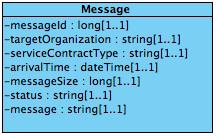

infrastructure: itintegration: messagebox
1.0.0 - draft
infrastructure: itintegration: messagebox - Local Development build (v1.0.0) built by the FHIR (HL7® FHIR® Standard) Build Tools. See the Directory of published versions
Källa: Tjänstekontraktsbeskrivning Meddelandetjänst, version 1.0.0 (2013-12-04), Tjanstekontrakt_Meddelandetjanst_Beskrivning.doc.
Här beskrivs den meddelandemodell som tjänstekontrakten bygger på. All information i modellen beskriver metainformation kring ett meddelande som hanteras i Meddelandetjänsten. Denna metainformation är inte relevant att mappa mot V-TIM 2.2 då den enbart består av enkla datatyper.

Figur 4. Meddelandemodell
Datum anges alltid på formatet ”ÅÅÅÅ-MM-DD”. Exempel: 2010-11-26
Tid och datum anges alltid på formatet ”ÅÅÅÅ-MM-DDThh:mm:ss”. Exempel: 2010-11-26T09:12:33
Tidszon anges inte i meddelandeformaten. Alla information om datum och tidpunkter som utbyts via tjänsterna ska ange datum och tidpunkter i den tidszon som gäller/gällde i Sverige vid den tidpunkt som respektive datum- eller tidpunktsfält bär information om. Såväl tjänstekonsumenter som tjänsteproducenter skall med andra ord förutsätta att datum och tidpunkter som utbyts är i tidszonerna CET (svensk normaltid) respektive CEST (svensk normaltid med justering för sommartid).
Uppräkningarna i schemat är modellerade som kodverk:
| Kodverk | Koder | CodeSystem | ValueSet |
|---|---|---|---|
Meddelandestatus (MessageStatusType) |
RECEIVED, RETRIEVED, DELETED | messagebox-messagestatus-cs | messagebox-messagestatus-vs |
Resultatkod (ResultCodeEnum) |
OK, ERROR, INFO | messagebox-resultcode-cs | messagebox-resultcode-vs |
Genererat ur infrastructure_itintegration_messagebox_1.0.xsd.
Domänschema infrastructure_itintegration_messagebox_1.0.xsd (namnrymd urn:riv:infrastructure:itintegration:messagebox:1).
| Namn | Typ | Beskrivning | Kardinalitet |
|---|---|---|---|
| messageId | long | 1..1 | |
| targetOrganization | LogicalAddressType | 1..1 | |
| serviceContractType | string | 1..1 | |
| messageSize | long | 1..1 | |
| arrivalTime | dateTime | 1..1 | |
| status | MessageStatusType | 1..1 |
Domänschema GetMessagesResponder_1.0.xsd (namnrymd urn:riv:infrastructure:itintegration:messagebox:GetMessagesResponder:1).
| Namn | Typ | Beskrivning | Kardinalitet |
|---|---|---|---|
| messageId | long | 1..1 | |
| targetOrganization | LogicalAddressType | 1..1 | |
| serviceContractType | ServiceContractType | Type which describes a service contract. Used in interaction GetSupportedServiceContracts. | 1..1 |
| message | string | 1..1 |
Domänschema infrastructure_itintegration_messagebox_1.0.xsd (namnrymd urn:riv:infrastructure:itintegration:messagebox:1).
Gemensam resultatkod. Om code är OK är övriga fält tomma. Om code är "INFO" eller ERROR kan information skickas i errorId och/eller errorMessage.
| Namn | Typ | Beskrivning | Kardinalitet |
|---|---|---|---|
| code | ResultCodeEnum | 1..1 | |
| errorId | int | 0..1 | |
| errorMessage | string | 0..1 |
Domänschema itintegration_registry_1.0.xsd (namnrymd urn:riv:itintegration:registry:1).
Type which describes a service contract. Used in interaction GetSupportedServiceContracts.
| Namn | Typ | Beskrivning | Kardinalitet |
|---|---|---|---|
| ServiceContractNamespace | anyURI | 1..1 |